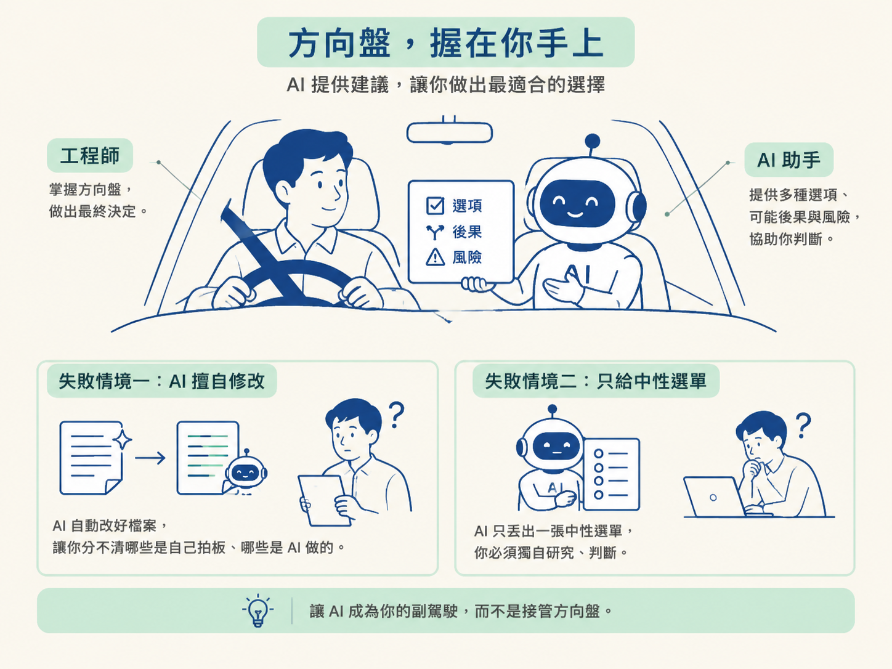
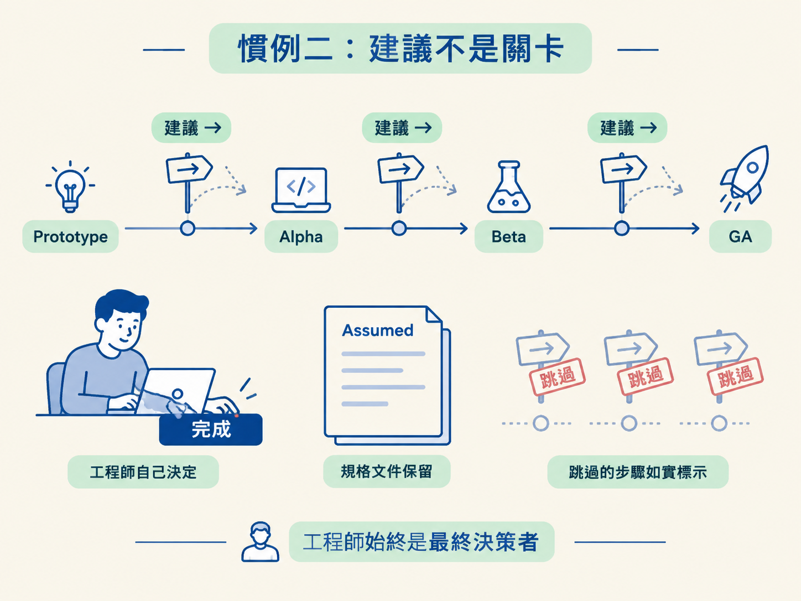
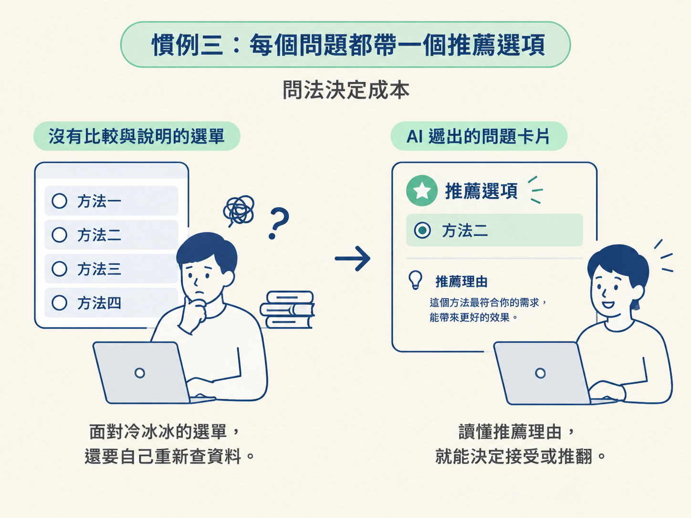
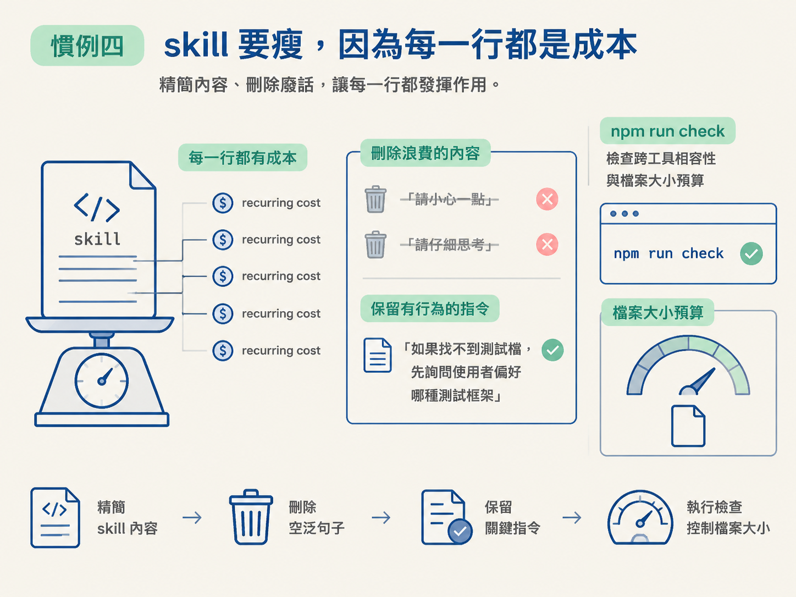

學完這一課，你應該能說明四條核心慣例各自在防什麼失敗：engineer decides、suggestions never gates、one recommended option，以及 keep skills lean。更重要的是，你會看出它們其實都在守住同一件事：人類握方向盤，AI 負責提供判斷材料，而不是偷偷替你做決定。
你請 AI 幫忙審一份規格，它不只挑出問題，還順手把內容改好了。等你回頭看檔案，已經分不清哪些決定是自己拍板、哪些是 AI 自己做的。另一種情況也很常見：AI 丟給你一份中性選單，問你要方案 A 還是方案 B，卻不說它比較推薦哪一個。你只好盯著畫面，自己重新做一次研究。
這兩種狀況不一定是模型能力不足，而是互動規則出了問題。前者讓 AI 變成主導者，後者則把所有判斷成本推回使用者。jsm-skills 採用的前提很直接：方向盤在工程師手上，AI 只把選項、後果與風險攤開來。
為了讓這個前提落實在每個 skill、每次對話裡，整套專案定下四條核心慣例。它們會一路出現在後續課程，也會成為你閱讀或修改 skill 時的檢查清單。

第一條是整組慣例的地基：任何由 AI 主動發起的驗證或評論，都只能是提議；AI 不能代替工程師執行，也不能代替工程師跳過。
例如，/architect 在撰寫規格時，可以請另一個模型進行交叉檢查（cross-model check）。這個檢查本身可能很有價值，但它只是被提出來的選項。要不要執行、執行後怎麼處理，仍然由你決定。
如果檢查找到問題，無論是規格缺口、尚未決定的關鍵事項，或應該修正的錯誤，都必須回報給你。AI 不能默默替你修改，然後把修改結果包裝成既定事實。
這裡要分清楚一條界線：如果是你主動執行 /check verify 或 /check review，那當然可以直接跑，因為這已經是你的選擇。不過，檢查完成後仍然只會回報結果，不會自動修改程式碼。
可以把規則記成一句話：AI 可以幫你動手，但最後的決定必須由你下。
這條慣例要防的是靜默決定。工具一旦悄悄替你做了選擇，你失去的不只是控制權，還有決策的來龍去脈。三個月後出了問題，你可能找不到當初為什麼採用這個方案，也無法判斷那是誰做的決定。
第二條處理的是流程設計：工程師才是負責人；/develop 之後的驗證、測試、審查與文件工作，都只是建議，可以跳過。工作的完成與否，由工程師宣布，不是由某個 skill 把關。
很多自動化流程會把「建議」偷偷變成「強制」。你完成一項功能後，系統要求先通過五個檢查，才能標記完成。結果你花了半小時，把和這次改動無關的紅燈逐一變成綠燈，只為了通過流程。
jsm-skills 刻意不採用這種設計。工作流會依照專案需要的嚴謹程度，從 Prototype、Alpha、Beta 到 GA，建議你執行哪些步驟。但這些仍然只是預設值。你可以針對單一功能覆寫，也可以整段跳過。
跳過的步驟必須誠實記錄成「跳過」，不能把它偽裝成「已完成」。流程唯一真正希望你留下的，是承載重要決定的規格文件，也就是 load bearing decision。不過，即使只留下標記為 Assumed、尚未正式核可的規格，也不會阻擋你把工作標記為完成。
把前兩條放在一起看，分工就很清楚：
兩者合起來，才能確保工程師始終是最終決策者。

第三條很短，卻會影響 AI 的每一次提問：只要問題需要使用者做選擇，就必須附上恰好一個推薦選項，並用一行說明推薦理由。
換句話說，AI 要先完成自己的判斷，給你它認為最好的答案；你可以接受，也可以推翻。它不能只丟一份中立選單，也不能丟出冷冰冰的問題後，把所有研究工作留給你；當然，也不能什麼都不問就自行決定。
例如，下面這種問法只是把工作推回給你：
「你想用哪種拆解方式？」
如果後面接著列出四個名詞，卻沒有比較，你還是得自己研究。更好的問法是：
「我建議使用 Tracer Bullet，也就是先打一條貫穿所有層的細線。因為這次是全新專案，目前最大的風險是各層接不起來，先打通一條路徑，能最快驗證這件事。」
這個版本替你完成了大部分研究，只把最後的判斷權留下來。你不需要從一張沒有方向的菜單開始，只要在理解理由後，決定接受或推翻推薦。

這條慣例主要防的是選擇癱瘓與無聲決定。它也能減少不必要的來回提問；到了下一課談 token 成本時，這會成為一個很具體的節省方式。
第四條把焦點從人轉到機器：skill 在執行路徑上每次都會被完整載入，因此每一個字，都是每次執行都要支付的成本。
所以，撰寫 skill 時要遵守幾項紀律：
最常見的違規，通常是「請小心一點」、「請仔細思考」、「務必徹底檢查」這類句子。它們聽起來很負責任，但不會具體改變模型的行為；寫進 skill，只是在每次載入時消耗預算。
真正值得留下的，是會改變行為的指令。例如：「如果找不到測試檔，先詢問使用者偏好哪種測試框架。」這句話定義了遇到特定情況時要採取的下一步，因此有保留價值。
這條慣例也有具體的執法工具。每次修改 skill 後，都要執行 npm run check，由腳本檢查跨工具相容性與檔案大小預算。這支腳本會在本節第四步成為主角；在那之前，下一課會先把「為什麼每一行都算成本」這筆帳算清楚。

把四條慣例並排看，它們其實是同一個信念的四個切面：
人類握方向盤，過程要誠實，而且要對成本有意識。
慣例一避免 AI 默默做決定；慣例二避免流程把建議變成強制關卡；慣例三讓 AI 提供方向，而不是丟一張中性選單；慣例四則避免 skill 因為多餘文字而拖慢每次執行。
這也解釋了為什麼有些 skill 讀起來「囉唆得很有禮貌」：它會反覆把決定權交還給你，把可跳過的選項明確寫出來，也把推薦理由放在問題旁邊。那不是客套話，而是一份把尊重使用者寫進程式碼的互動契約。
四條核心慣例共用一個前提：方向盤在工程師手上。慣例一要求 AI 主動發起的檢查只能提議，不能代跑或代改；慣例二把
/develop之後的步驟設成可跳過的建議，done由工程師宣布；慣例三要求每個問題都附上一個推薦選項與一行理由；慣例四把 skill 的每一行都視為 recurring cost，要求內容保持精簡。四條合在一起，就是一套「人類決策、過程誠實」的互動契約。
「每一行都是成本」聽起來像常識，但這筆成本到底花在哪裡、什麼時候最貴，多數人其實沒有算過。下一課會把 token 的帳攤開來看：為什麼一個看起來很嚇人的 resident 數字，大部分其實很便宜；以及真正要省成本時，應該先砍輸出、砍 fresh input，還是砍檔案大小。